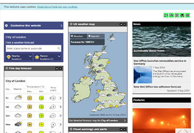
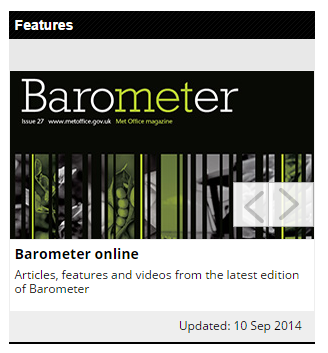
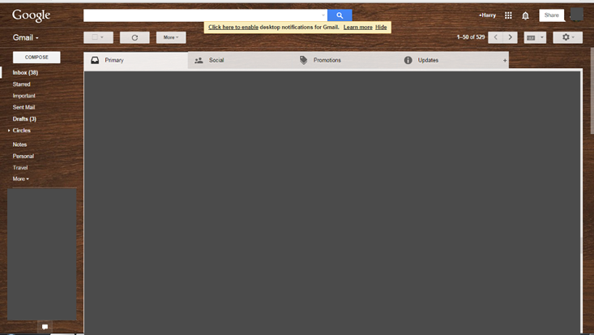
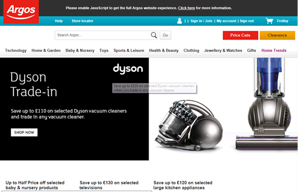
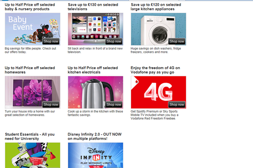

Real-time Information
Definition
Real time information is the almost instant and constant update of information that is specific to a target audience. This can include information such as train times for commuters. This information provides people the information they need to make a decision or purchase, and therefore saving them time and sometime money in the long run. It also can aid people in predictions with services such as weather reports which are updated very frequently. A good example of real time information is online weather reports (Such as the met office www.metoffice.gov.uk).
Target audience
Weather reports really target people who are ‘out and about’ and need to know what equipment to bring beforehand. This allows them to comfortably go out with confidence without the weather giving them any surprises. Weather reports can also play a vital part in the economy in many different ways.
Farmers will need to know the weather forecast before they plan to harvest their crops, if wrongly predicted it may cost them a large sum of money. This isn’t just vital for farmers, it can also play a large role with festival planners as having bad weather can mean a bad festival.
Benefits of using weather sites on the internet?
There are many benefits to using the internet for checking weather than many other alternatives. The internet can be immediately updated if any new information comes out, whereas weather in a magazine or newspaper cannot be changed or updated if the weather changes. Using the internet to find out about weather means that you can access it anywhere if you have an internet connection (which today is most of the country). The internet can also provide a very detailed reading of what the weather will be like allowing people to carefully plan things such as hikes and so on.
Drawbacks of using weather sites on the internet?
There are few drawbacks to finding weather on the internet, however people can become to reliant on the information that the web tells them without checking it through other means (Such as weather in magazines or physical weather dials). The weather given on the internet may never be accurate due to technical error, so sometimes relying on the internet alone can leave you in a bad situation. Sites providing weather online may contradict each other, so checking multiple sites can sometimes give confusing information.
Reviewing a weather site, is it fit for purpose?
Here I will be reviewing the Met Office website (www.metoffice.gov.uk)
The met office provides good and clear information about the whole country which is updated frequently to provide you with the most up-to date information about weather. So does it give weather information right away? Well yes it does, a nice and quick overview of the countrys weather today on the first page. This means you can get useful
information on the first page without even having to click on anything, a postitive for the Met office. The Met Office also provides a quick and easy search box to finialise your search to the area of interest. This enables a 1 click policy method to find your local area without having to click through pages of locations, another positive for the met office.
However the met office isn’t all good. On the home page in amongst The alternate weather information is very random, which can really make the home page look cluttered and messy at times. Here we have Barometer which is mainly aimed at wildlife watchers and viewers alike. I can see from a buisness perspective they have done this to generate ad revenue, however to the like minded weather viewer this isn’t what they expect to see on a well regarded front weather page.
Does the website fit its purpose?
In conclusion for the Met Office does infact provide high quality and detailed information about the weather all around the country
that is updated frequenty, something any like minded consumer of weather information will be looking for. It has a niftly little search box to further refine your search to a specific area which is a great implementation from the met office. However being nit picky about the met office, my only gripe is for people new to the idea of finding out weather online, the random clutter about articles of a different matter may be misleading and confusing to some, but from a buisness perspective it makes sense as it enables them to keep their site and buisness running without an alternative source of income. Overall a great weather site with all the weather information frequently updated that you could ever need to play your day out!
What enhancements could I make to the site?
If I were to make enchancements to the already amazingly informational weather website I would first move the small amount of clutter that is there on the homepage to an alternate search or navigation bar located at the top. I would also make sure that it is clearly listed what each link is without me having to click on it to find out, thus saving time and effort. Apart from those 2 points there isn't much I would change, I know the website has its flaws, however it does exactly what it is meant to do, and does it very well, well done Met Office.
Communication
Introduction
Communication using the internet is one of the most used services online used daily. Think of how many emails are sent every day. There are many ways in which people can communicate online which include: Email, instant messaging, newsgroups, online conferencing, blogs, mini blogs, social networking and many more. The profitability and business side of communications are mainly made from ad revenue from sites such as Facebook, when many of the services are free to use like Email. There are also ways in which you can communicate with a community via blogs and forums which allows you to communicate and connect with the world.
Target Audience
A target audience for email is very vast and not very specific. Email is aimed at anyone who has access to a computer and knows how to use the email application, so a target audience for this is anyone who has the I.T skill to be able to use it. However businesses and large corporations and schools are emails main participant as they use it for important matters daily, and without it allot of the functions they carry out everyday would be possible.
Benefits of using Email
Email provides many benefits and ‘add-ons’ to a persons life. Without sending letters or wasting money on texts they can simply type a much faster and more details message, and furthermore attach larger files and send them across the web to someone at the receiving end. Emails also allow for large send out to many chosen people(i.e. a newsletter out from a school), and simultaneously send it to possibly thousands of people with the click of a button. This helps to vastly save time and money, and allows a wider connectivity in the business of school ect.
Drawbacks of using Email
Email is great however it does have some minor flaws in which other excel. Emails are instant, but people will not check them instantly like a text. They are stored online so if you need to check your emails you need to use a computer(or smartphone), log into your email account and check them. Often many of the attachment boundaries of which you are allowed to send are very small and often limit the amount you can send, however an alternative to this is add a link to a download page in which they can just download it. Emails can be susceptible to server crashes and failures. In a school or office environment if the server goes down in which everyone is sending emails via then all Emails will stop which could cause many problems for the company or school. Unlike text message emails also require internet to work, so if you have no internet connection then you will not be able to send or receive Emails either.
Reviewing an Email website, is it fit for purpose?
Today I am going to have a look at Gmail, a very popular email site made by Google(mail.google.com)
{Here is Gmail (I have blanked out the inbox for personal reasons) It is quite a clean and easy to navigate Email site used by millions everyday. On the left I have the other links in which my Email connect to, such as Google+. Above the main inbox, Gmail sorts all of your mail into 4 categories: Primary, social, promotions(spam) and Updates. This is a great feature as it allows you to keep your different types of email separate. For example if someone sends me an Email telling my about Amazon, it wont get mixed up by the automated Email that Amazon will send to me every now and again. Emails allow companies to send me updates and keep me informed on, and any subscriptions that I may be entitled too will be updated to me when they are sent out as well.
Does the website fit its purpose?
As a functional email website, Gmail fills the role of a emailing website very well. It is clean and has a simple design that you can customise your self as well. It filters out different emails into 4 different categories so that not all of your emails are jumbled into one section which many email websites do not offer. All your data is linked with your Google account which allows Gmail to be accessed on your phone tablet and laptop where ever you go allowing the transfer of data and information on the go. You can also Video call of Gmail using Google hangouts which is a versatile and easy to use video chat service that you can connect to anyone. To some this website may seem to simple and too bland in which I can see, however this allows all of the clutter that some email websites have to go away and make finding and replying to emails faster than ever.
What enhancements would I make to the site?
Personally I would not change much about this website however there may be some things that I would change. Firstly I would remove any advertisements if there are any as this will only slow down the website and cause clutter. I would also possible make it more customizable and furthermore make Gmail an actual desktop plugin which would allow for faster Email access and sending. Apart from these Gmail is one of the best websites that I have ever used and will continue to use it today.
Conclusion
Overall using Emails as an online service is a great way to sending information and data than other means. It may not be the fastest way to send messages from things like Texting or instant messaging, however emails do provide an easy way to send data and attachments to more than one person or a group of people. It does have its drawbacks as you need the internet to be able to send emails, but once you have your emails up and running they will be very useful and will further connect you into the information world.
E-Commerce
Definition
Commerce is to do with commercial related subjects such as; shopping, banking and more. However which modern day technology we can use e-commerce. E-commerce is where regularly available things such as shopping are available online. Oxford dictionary definition “Commercial transactions conducted electronically on the Internet.”
Target audience
So what is the target audience for things such as auction and shopping websites? In many ways the target audience is aimed at anyone who can purchase items online (In which you have to be a certain age to do). It is also aimed at businesses who want a good relationship with sites such as Ebay to sell to a wider audience in which the website can then make revenue from those businesses to make sure their audience gets the widest range of products as possible.
A specific example of people who will use e-commerce are disabled people. With the help of e-commerce they don’t have to go out and about to do their weekly food shopping or buy items they need round the house, e-commerce aids them in their day to day life saving them time and sometimes money.
Benefits of using e-commerce
One large benefit of using e-commerce is the transactions of money via online banking. This saves masses amounts of time and is a large convenience for people who use their bank account everyday. In most types of e-commerce it speeds up everyday life without leaving the house which means less traveling and therefore saving money. E-commerce can also allow you to make money via sites such as Ebay which is an online auction website. This means you don’t have to go out travelling to sell your household items you just simply go online and list it and very soon you will have a buyer, all done over the internet in the comfort of your home.
Drawbacks for using e-commerce
Some drawbacks of using e-commerce is complication and postage. Since your buying or transacting something online there can always be complication such as postage not coming through or being lost, or a transaction not being completed. These can be real timewasters and headaches and for people who are new to e-commerce, it can put them off completely. In the sense of online shopping, anything listed is only ever virtual and you are not there seeing in person what you are buying. E-commerce can also cause people to not get out enough, this can lead some problems long term such as obesity which can cause long term issues. Some e-commerce can also be a scam such as fake Ebay listings, this can surely put people off e-commerce completely therefore e-commerce is more of a hit and miss service in todays commerce.
Reviewing an e-commerce website
Today I am going to review a shopping website and see the advantages and the drawbacks of that website.
Argos (www.argos.co.uk) is a popular high street shop in which you can also go online and order products to pick up from your local branch. Here is the Argos homepage. It provides a very simplistic overview of different links of the website. It also has a handy search bar from a direct way to search a specific item. It has an area for on sale items on the home screen hoping to catch you out on a quick bargain if it takes your fancy.
Just below the initial homepage there are some links to sales and other places of interest around the website, and other website partners.
The website is very functional and provides a large range of products to view while abiding to a good layout and intuative design.
The main homepage is quite cluttered as seen with other large brand websites. The images are also quite large in compairson to other features meaning they take up a large majority of the screen, forcing you to scroll down futher to see more information. There is also no rolldown for the sectional bars at the top, this can increase the amount of clicks needed to reach an area of the website. This in most cases is more than 3 clicks which is usually a guiding design to a good website, Argos just seems to fall short of these issues, but in other it does very well.
Does the website fit its purpose?
Well in short the website does fit its purpose in providing a way in which customers can use e-commerce via Argos’s website to order products online and collect them in the in store. It has some bad points such as clutter on the main home page and more than needed clicks to reach a specified item, however it does provide all of the features that allow users to easily order and complete transactions online sufficiently, with all of the information that they need to be able saftely and quickly order and pickup an item with ease.
E-commerce shopping conclusion
Overall shopping online is a new and better way to shop whalst staying in the comfort of your home. Online shopping is well implemented in the modern day internet and proved a really great and secure service to allow users to save time shopping out and about when they could bedoing other adjendas such as work in a home office.
Banking and Shopping
Benefits of using IT for Banking
There are many benefits of using Internet banking over the usual visiting and paper based banking that we are used too. It provides much faster and easier access of your bank details and info, and it also allows you to easily and securely transfer money to other accounts without visiting a bank, which in the long run saves time. Internet banking can also be very convenient at is allows you to access your online bank when and wherever you are, and is very secure as you still need your card but use a small device to enter online. Online banking provides a way in which you can also contact your local bank, and get updates and transfers online instead of getting a paper based statement via the post.
Drawbacks of using IT for Banking
Even with the added benefits of using online banking there are quite a few drawbacks associated with it. Firstly there is no banker or accounting assistant to talk to first hand to help you through the process 1 on 1, this means that all interaction with the bank is taken away when you bank online instead of in person. Also it requires an internet connection to bank online obviously, so if your internet line goes down or there isn’t any access to internet then you cannot access your bank details putting you at a disadvantage. Mainly you cannot pay money into a bank at home if its notes or coins, so then you have to make another trip to the bank to pay in cash. Overall banking online has many drawbacks but if visiting a local banking branch and online banking are used together then it can be a good combination.
Conclusion of online banking
Overall online banking is usually very positive, it allows people who don’t have the time to visit a bank to easily and securely check their bank details and credentials from the comfort of their home. It can also be done from nearly everywhere in meaning that you don’t have to be at your house to check your details, you could be on holiday however this leads into some of the bad points about it. You must have an internet connection to use online banking obviously which means that if you rely on it and there is no internet connection or an internet connection goes down then you will find it hard to compensate. Online banking also takes away the human element of the whole transaction which subtracts the experience or guidance that a banker can provide which in some ways can be deemed bad. Overall online banking is a great service that has arisen in recent years and continues to provide a sustainable and viable option for many people that don’t have the time to visit a bank but want to view their bank details from the comfort of their home.
Shopping
Benefits of using IT for shopping
Online shopping is one of the internet revelations for the modern online era. It has saved time and money and companies have vastly grown while others have fallen. Online shopping from sites such as eBay or Amazon are widely used across the globe and have provided different means of transporting goods and the transfer of money. You can buy mostly everything that you need online from things such as Household items and technology to your daily grocery shopping and building equipment. It is the largest online department store to say the least. It allows other countries outside of trading zones to also trade products with other countries they couldn’t do before. You can buy mostly anything that you want to from the comfort of your home or even on the go with APPs and internet connection on smart phones. Online shopping is ubiquitous on most internet capable devices and can be accessed in most places around the globe providing a wide variety of products that you don’t have to travel out of your way for to get.
Drawbacks of using IT for shopping
Online shopping is great, when it goes right. Many times on sites such as eBay you will find scammers who are selling dodgy products to get away with the money. Online shopping also has to be transported to your house which means that there are postage costs involved as well as the risk of damage. Online shopping has also ruined some of the technological front of products from companies such as Comet (or what used to be comet), online shopping has caused them to go bust which reduces to amount of traditional shops with people that you can speak to and get help from. You can also buy illegal products online which isn’t helpful for the border force as it puts pressure on them as well as money to check imported products.
Conclusion of online Shopping
Overall online shopping is a good and bad thing, its great for the customer and bad for your average retailer. Local shops have to bring down their prices to match those found online just to stay in business, and then again they aren't making that much profit for doing so.
However on the flip side, shopping online could never have been easier that it is today, parcels arrive relatively quickly and saves a trip to your local DIY shop for a screw that you just couldn't find.
Info and Conclusion
The data protection legislation
The data protection legislation was introduced in 1998 and provides a safe way to store data online without the hustle of paper based systems, every bit of information that is stored needs to be registered with the main details about the origins of the information and who/why it is being stored.
The data protection legislation was passed by the government In 1998 and is designed to safe guard internet stored or related data. This was mainly introduced because of the increasing number of businesses using online data storage instead of it being paper based as it is much faster.
It has 2 rules in which are designed to protect citizens of the UK.
1. setting up rules that people have to follow
2. having an Information Commissioner to enforce the rules
Some of the roles
Companies alike are meant to follow these rules. First it involves the information commissioner, this person has the powers to enforce the act. Next there is the data controller, this person or company is in charge of the data and collects it related to people. Finally there is the data subject, this is someone who has stored data about them in the database outside of their direct control. A good example of this is through banking, people person banking details are stored online for example their phone number and home address (or even bank account details).
The information Commissioner
This relates to any person who needs to store person information online, they must register with the Information commissioner. Data controllers must declare and say what information is being stored so it can be registered. Each entry into the register about a persons information contains: Data controllers names and address, a description of the information stored, what they are going to use the information for, where the data controller plans to pass on the information to other people or organisations, where the data controller will transfer the information outside the UK and finally details of how the data controller will keep the information safe and secure.
There are many types of information that can be stored, but these are the main points of how and why it is stored, and how it used across the UK today since 1998.
Health and safety at work act 1974
The health and safety at work act also known as the HSWA is a legislation covering the health and safety of occupational health and safety in great Britain. This along with other authorities is responsible for the act and a number of other acts and statutory instruments in the average working environment, safe keepers if you will.
Before the act was implemented, things such as school demonstrations and science experiments put the experience before safety. This is also the same with businesses which put profit and the outcome of the item at hand first and safety second. This lead to more accidents and a more troubled court. After it was implemented, accidents went down but in some cases so did profit as well.
The legislation is enforced by the government, this is done as it covers a wide range of subjects. This is more or a secondary legislation underneath the original one. There is that much more information related to the specifics of the legislation, however many people will know it as just ‘Health and safety’ and in modern day lives it can get in the way of things all the time. However from a country wide point of view, the benefits of the legislation outweigh the negatives.
Life in the information age conclusion
Overall work and home life styles have changed as a result of new technologies and the internet. It has enabled companies alike to expand their business further than a shop would have allowed them as people all over the world with internet access can use their facilities and use what they are offering from the comfort of your own home. The information has also allowed us to use things such as smart phones which are portable and can do lots of the functionality that a laptop was designed for on the go which can fit in your pocket and be taken anywhere.
New technologies are also advancing in the computer stage as of right now 4K and even 5K screens are out which 10 years ago would not have even been dreamed off. With new developments in PC hardware, more capable machines are getting more affordable and more efficient. With new technology runs happening every year at release date points, you can always expect in the modern world for some new technology to come out that is more powerful and more efficient than the previous only 1 year ago.
Life in the information age can however take away traditions that others might also see as important such as sending letters or direct contact with people instead of instant messaging or voice chat over the internet. However overall the information age is a good thing as technology advances are can reek the benefits of these technological advancements.